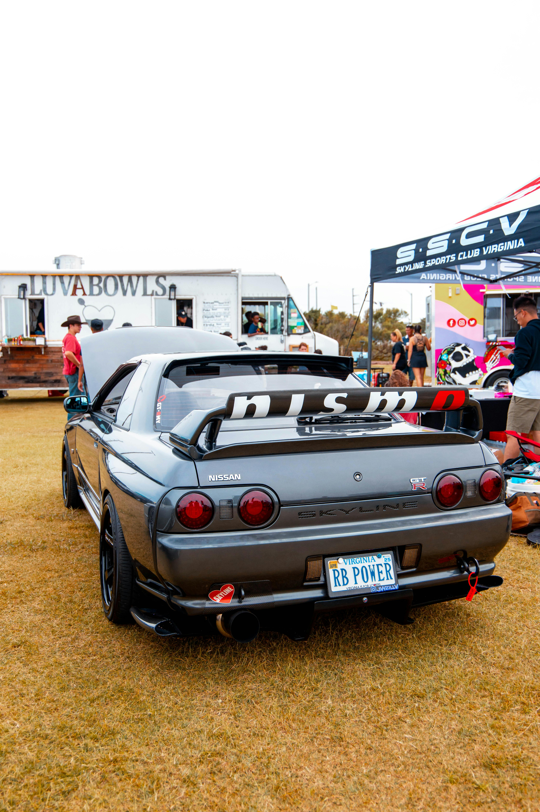

Co je to tuning?
Tuning aut je úprava vzhledu a výkonu vozidel, která přináší jedinečný styl a lepší jízdní vlastnosti.

Typy tuningu
- Vizuální tuning: spoilery, LED světla, speciální laky.
- Výkonnostní tuning: úpravy motoru, výfukového systému, podvozku.
- Interiérový tuning: závodní sedačky, audiosystémy, karbonové prvky.
Oblíbené značky a modely
Mezi oblíbené modely pro tuning patří BMW M3, Nissan GT-R, Honda Civic a mnoho dalších.